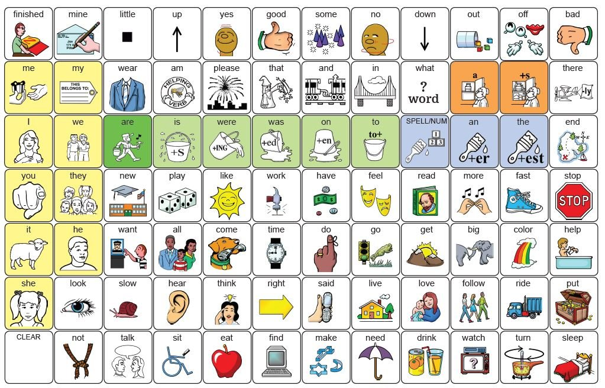

Complete the tour to explore the board
LAMP Words for Life (WFL) is an AAC vocabulary system built on motor learning — every word lives in the same spot every time, so users develop reliable muscle memory to communicate faster and more independently. Let's explore how it's organised.